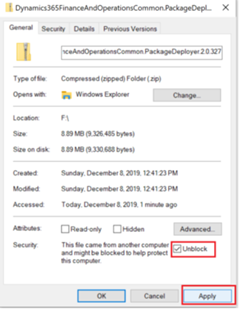
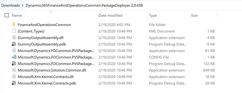
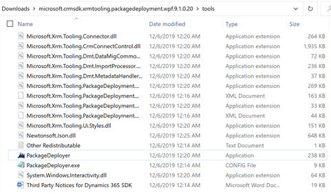

Allgemeine Problembehandlung
[!include[banner](../../includes/banner.md)][!include[rename-banner](~/includes/cc-data-platform-banner.md)]Dieses Thema enthält allgemeine Problembehandlungsinformationen zur dualen Schreibintegration zwischen den Apps Finance and Operations und Dataverse.
Important
Einige der in diesem Thema behandelten Probleme erfordern möglicherweise entweder die Systemadministratorrolle oder Microsoft Azure Active Directory (Azure AD) Anmeldeinformationen des Mandantenadministrators. Im Abschnitt zu jedem Problem wird erläutert, ob eine bestimmte Rolle oder Anmeldeinformationen erforderlich sind.
Wenn Sie versuchen, das Dual-Write-Paket mithilfe des Package Deployer Tools zu installieren, werden keine verfügbaren Lösungen angezeigt
Einige Versionen des Package Deployer Tools sind nicht mit dem Dual-Write-Lösungspaket kompatibel. Um das Paket erfolgreich zu installieren, müssen Sie Version 9.1.0.20 oder später des Package Deployer Tools verwenden.
Installieren Sie nach der Installation des Package Deployer Tools das Lösungspaket, indem Sie die folgenden Schritte ausführen.
Laden Sie die neueste Lösungspaketdatei von Yammer .com herunter. Nachdem die Paket-Zip-Datei heruntergeladen wurde, klicken Sie mit der rechten Maustaste darauf und wählen Sie Eigenschaften. Wählen Sie das Kontrollkästchen Sperrung aufheben und wählen Sie dann Anwenden aus. Wenn Sie das Kontrollkästchen Entsperren nicht sehen, ist die Zip-Datei bereits entsperrt, und Sie können diesen Schritt überspringen.

Extrahieren Sie die Paket-Zip-Datei und kopieren Sie alle Dateien in die Dynamics365FinanceAndOperationsCommon.PackageDeployer.2.0.438 Mappe.

Fügen Sie alle kopierten Dateien in den Ordner Werkzeuge im Package Deployer hinzu.
Führen Sie PackageDeployer.exe aus, um die Dataverse Umgebung auszuwählen und installieren Sie die Lösungen.

Aktivieren und Anzeigen des Plug-In-Überwachungsprotokolls in Dataverse, um Fehlerdetails anzuzeigen
Erforderliche Rolle zum Aktivieren des Ablaufverfolgungsprotokolls und zum Anzeigen von Fehlern: System Administrator
Um die Nachverfolgung einzuschalten, führen Sie diese Schritte aus.
- Melden Sie sich bei der modellgesteuerten App in Dynamics 365 an, öffnen Sie die Seite Einstellungen und dann unter System wählen Sie Verwaltung aus.
- Wählen Sie auf der Seite Verwaltung die Option Systemeinstellungen aus.
- Auf der Registerkarte Anpassung wählen Sie Plug-In und benutzerdefinierte Workflow-Aktivitätsverfolgung und Alle, um das Plug-Trace-Protokoll zu aktivieren. Wenn Sie Ablaufverfolgungsprotokolle nur protokollieren möchten, wenn Ausnahmen auftreten, können Sie stattdessen Ausnahme auswählen.
Um die Nachverfolgung anzuzeigen, führen Sie diese Schritte aus.
- Melden Sie sich bei der modellgesteuerten App in Dynamics 365 an, öffnen Sie die Seite Einstellungen und dann unter Anpassung wählen Sie Plug-In-Nachverfolgungsprotokoll aus.
- Suchen Sie die Ablaufverfolgungsprotokolle, in denen das Feld Modellname auf Microsoft.Dynamics.Integrator.DualWriteRuntime.Plugins.PreCommmitPlugin festgelegt ist.
- Doppelklicken Sie auf ein Element, um das vollständige Protokoll anzuzeigen, und klicken Sie dann auf das Inforegister Ausführung und üerrprüfen Sie den Text Nachrichtenblock.
Aktivieren Sie den Debug-Modus, um Probleme mit der Live-Synchronisierung in Finance and Operations Apps zu beheben
Erforderliche Rolle zum Anzeigen der Fehler: Systemadministrator – duale Schreibfehler, die ihren Ursprung im Dataverse haben, können in der Finance and Operations-App auftreten. In einigen Fällen ist der vollständige Text der Fehlermeldung nicht verfügbar, da die Nachricht zu lang ist oder personenbezogene Daten (PII) enthält. Sie können die ausführliche Protokollierung für Fehler aktivieren, indem Sie die folgenden Schritte ausführen.
Alle Projektkonfigurationen in Finance and Operations Apps haben eine IsDebugMode Eigenschaft in der DualWriteProjectConfiguration Entität. Entität in DualWriteProjectConfiguration mithilfe des Excel-Add-Ins öffnen.
Tip
Eine einfache Möglichkeit, die Entität zu öffnen, ist das Einschalten des Modus Design im Excel-Add-In und dann das Hinzufügen von DualWriteProjectConfigurationEntity zum Arbeitsblatt. Weitere Informationen finden Sie unter Entitätsdaten in Excel öffnen und sie mithilfe des Excel-Add-Ins aktualisieren.
Stellen Sie die IsDebugMode Eigenschaft auf Ja für das Projekt.
Führen Sie das Szenario aus, das Fehler generiert.
Die ausführlichen Protokolle sind in der Tabelle DualWriteErrorLog verfügbar. Verwenden Sie die folgende URL, um Daten im Tabellenbrowser nachzuschlagen (XXX wie erforderlich ersetzen):
https://XXXaos.cloudax.dynamics.com/?mi=SysTableBrowser&tableName=DualWriteErrorLog
Überprüfen Sie die Synchronisierungsfehler auf der virtuellen Maschine auf der Finance and Operations App
Erforderliche Rolle zum Anzeigen der Fehler: Systemadministrator
- Melden Sie sich bei Microsoft Dynamics Lifecycle Services (LCS) an.
- Öffnet das LCS-Projekt, das Sie ausgewählt haben, um das Testing für das duale Schreiben durchzuführen.
- Wählen Sie die Kachel Cloud gehostete Umgebungen aus.
- Verwenden Sie Remotedesktop, um sich bei der virtuellen Maschine (VM) für die Finance and Operations App anzumelden. Verwenden Sie das lokale Konte, das in LCS angezeigt wird.
- Öffnen Sie nun die Ereignisanzeige.
- Wählen Sie Anwendungs- und Dienstprotokolle > Microsoft > Dynamics > AX-DualWriteSync > Operativ.
- Überprüfen Sie die Liste der letzten Fehler.
Verknüpfung aufheben und eine andere Dataverse Umgebung aus einer Finance and Operations App verknüpfen
Erforderliche Rolle zum Aufheben der Umgebungsverknüpfung: Systemadministrator für die Finance and Operations-App oder Dataverse.
- Bei der Finance and Operations App anmelden.
- Gehe zu Arbeitsbereiche >Datenmanagement und wählen Sie die Kachel Duales Schreiben.
- Wählen Sie alle ausgeführten Zuordnungen aus, und wählen Sie Beenden.
- Wählen Sie Verknüpfung für Umgebung aufheben aus.
- Wählen Sie Ja aus, um den Vorgang zu bestätigen.
Sie können jetzt eine neue Umgebung verknüpfen.
Das Formular für die Auftragspositionsinformationen können nicht angezeigt werden.
Wenn Sie in Dynamics 365 Sales einen Autrag erstellen, können Sie durch das Klicken auf + Produkte hinzufügen möglicherweise zum Bestellformular für Dynamics 365 Project Operations weitergeleitet werden. Von diesem Formular aus gibt es keine Möglichkeit, das Formular Information der Kundenauftragsposition anzuzeigen. Die Option für Information wird in der Dropdownliste unter Neue Auftragsposition nicht angezeigt. Dies liegt daran, dass Project Operations in Ihrer Umgebung installiert wurde.
Um die Formularoption Information wieder zu aktivieren, führen Sie die folgenden Schritte aus:
- Navigieren Sie zur Auftragsposition-Entität.
- Suchen Sie das Information-Formular unter dem Formularknoten.
- Wählen Sie das Formular Information und klicken Sie auf Sicherheitsrollen aktivieren.
- Ändern Sie die Sicherheitseinstellung in Anzeige für alle.